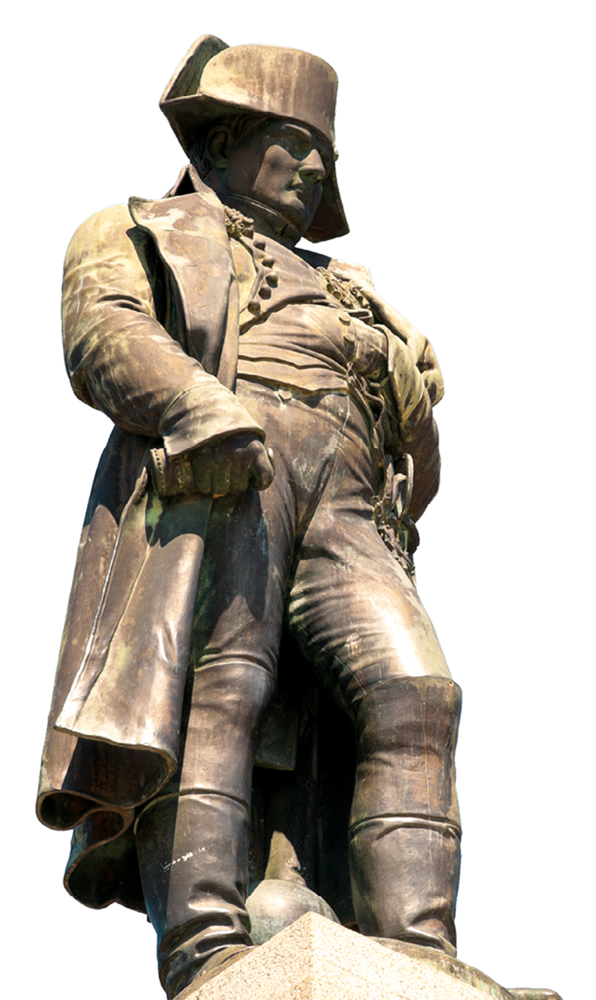

HOUËL, Jean-Pierre-Louis-Laurent. A Tomada da Bastilha , 1789. Aquarela. 50,5 × 37,8 cm. Biblioteca Nacional da França, Paris, França. Essa obra é uma representação do acontecimento que marcou o início da Revolução Francesa. .
Biblioteca Nacional da França, Paris
A situação da França no final do século XVIII era muito precária. Dificuldades no campo e na cidade aumentavam a carência e a insatisfação da população pobre. Clero e nobreza tinham inúmeros privilégios, não pagando impostos e recebendo tributos e dízimos do Terceiro Estado. A contradição entre a pobreza da população e as regalias das camadas privilegiadas provocou o início de uma grande revolução.
A Revolução Francesa foi um movimento amplo que teve como consequência o colapso da monarquia absolutista francesa e a formação de uma sociedade organizada segundo novos princípios, abolindo os privilégios estamentais que caracterizaram o Antigo Regime.
Essa revolução espalhou pelo mundo os ideais de igualdade, liberdade e fraternidade, bem como a noção de soberania popular, e estimulou movimentos sociais que defendiam os direitos dos cidadãos.
O levante ajudou a consolidar os ideais burgueses na Europa, pois defendia a propriedade privada e criou um sistema político no qual a burguesia participava das decisões políticas do governo. Neste capítulo, vamos conhecer as diversas etapas desse processo.
- Em sua opinião, algumas pessoas deveriam ter mais benefícios do que outras? Por quê?
- Na sociedade em que vivemos, há diferenças sociais entre as pessoas? Como podem ser classificadas essas diferenças?
Neste capítulo serão abordadas as habilidades
EM13CHS101
,EM13CHS103
.Os marcos da Revolução Francesa
A Revolução Francesa é tradicionalmente considerada o indicador do fim da Idade Moderna e o ponto de partida de uma nova etapa: a Idade Contemporânea.
A eclosão da Revolução Francesa em 1789 marca uma linha divisória entre dois sistemas sociopolíticos opostos: o Antigo Regime e a sociedade burguesa. No primeiro, vigorava o absolutismo monárquico e a sociedade se organizava de acordo com princípios estamentais. No segundo, surgiram os regimes liberais-democráticos e a sociedade se organizou em classes sociais.
Estamento é uma divisão social na qual as diferentes camadas da sociedade têm direitos e deveres distintos. Alguns grupos são privilegiados, enquanto outros são obrigados a cumprir deveres específicos variados. Além disso, poucos indivíduos conseguem passar de um estamento para outro. Já em uma sociedade de classes , todos os indivíduos têm os mesmos direitos e deveres, a mobilidade social é maior e muitos podem passar de uma classe para outra. Nesse modelo de sociedade, o critério principal de divisão social é a riqueza.
França pré-revolucionária
A França era um dos países mais ricos da Europa. O seu poder resplandeceu na época do rei absolutista Luís XIV, que esteve no poder entre 1643 e 1715. O crescimento econômico francês refletia sobretudo nos negócios da burguesia, dedicada especialmente ao comércio e à produção de manufaturas. Entretanto, mesmo enriquecida, esse grupo não tinha grande participação nas decisões políticas.
Durante o Antigo Regime a sociedade francesa estava dividida em três camadas sociais, chamadas de estados:
O Primeiro Estado era formado pelo clero e representava 2% da população. Esse grupo desfrutava de muitos privilégios, como o direito de cobrar o dízimo e de controlar propriedades rurais. Além disso, era isento do pagamento de impostos.
O Segundo Estado era composto da nobreza e representava 1,8% da população. Era subdividido em três grupos, sendo o mais importante a nobreza palaciana ou cortesã, formada por nobres que viviam em torno do rei e moravam no palácio real. Alguns deles atuavam como conselheiros. Em seguida, vinha a nobreza provinciana, formada por nobres proprietários de terras que exploravam os camponeses cobrando tributos feudais. Finalmente, a nobreza togada era formada por descendentes da burguesia enriquecida que compravam títulos de nobreza ou os ganhavam por prestação de serviços à Coroa. Todos possuíam muitos privilégios no governo, eram isentos de impostos e ocupavam os mais altos cargos administrativos e militares.
O Terceiro Estado era formado pela imensa maioria da população, abrangendo todos os que não pertenciam aos grupos privilegiados. Era composto da alta burguesia, ou seja, banqueiros, industriais e grandes comerciantes; e da baixa burguesia, como os pequenos comerciantes, profissionais liberais e trabalhadores urbanos. Havia também os trabalhadores empobrecidos, chamados de sans-culottes , os camponeses, que formavam a maioria da população francesa, e uma massa de desempregados e marginalizados.
BOILLY, Louis Léopold. Sans-culotte , 1792. Óleo sobre madeira. Museu Carnavalet, Paris, França. Os membros da pequena burguesia eram assim chamados pela nobreza porque não usavam um “calção” ( culotte ) típico da aristocracia, adotando calças como a retratada no quadro. Os sans-culottes eram, em geral, os líderes das manifestações de rua.
Museu Carnavalet, Paris
Ao longo do século XVIII, a situação econômica da França começou a se deteriorar devido aos gastos excessivos do Estado na manutenção dos privilégios da nobreza e do clero, mas também por conta de conflitos bélicos nos quais a monarquia se envolveu.
A situação se agravou ainda mais nas décadas finais do século, quando uma sucessão de péssimas colheitas e graves crises agrícolas afetou o campo e a cidade. Isso aumentou a carência e a insatisfação do Terceiro Estado diante dos luxos e privilégios garantidos aos demais estados.
Diante desse cenário, o rei Luís XVI decidiu consultar seus ministros em busca de medidas para acalmar os ânimos da população. O objetivo era propor políticas para diminuir os problemas sociais que, naquele momento, ameaçavam a paz interna do reino.
Robert Jacques Turgot , ministro das Finanças entre 1774 e 1776, e Jacques Necker , que assumiu o cargo entre 1776 e 1781 e entre 1788 e 1789, sugeriram algumas ações para equilibrar o orçamento. Porém, não alcançaram seu objetivo por causa da pressão feita pelos setores mais conservadores da nobreza e do clero.
Charles Alexandre de Calonne , ministro das Finanças entre 1783 e 1787, tentou implementar um plano de reforma fiscal baseado nas ideias de seus antecessores, o que significaria o fim dos privilégios fiscais da nobreza e do clero. A oposição feroz dos poderosos causou sua queda em 1787. Desse modo, o único meio encontrado pelo rei para tentar resolver o problema econômico da França consistia na utilização do antigo sistema de convocação dos Estados Gerais.
Maria Antonieta.
Direção: Sofia Coppola. 2006.
Classificação indicativa: 14 anos.
O filme representa a vida da austríaca Maria Antonieta desde o momento em que chegou ao Palácio de Versalhes para se casar com Luís XVI até o início da Revolução Francesa. Embora a diretora trabalhe com liberdade artística e não seja totalmente fiel à realidade, o filme explora as extravagâncias da vida cotidiana da nobreza pré-revolucionária e pode ajudar a compreender as desigualdades do Antigo Regime.
Os Estados Gerais
Em maio de 1789, Luís XVI tentou minimizar o descontentamento do povo convocando eleições para a formação da Assembleia dos Estados Gerais, da qual participariam representantes dos três estados.
COUDER, Auguste. Inauguração dos Estados Gerais, 5 de maio de 1789 , 1839. Óleo sobre tela. 400 × 715 cm. Museu de História da França, Versalhes, França. A imagem representa o Primeiro, o Segundo e o Terceiro estados reunidos no Palácio de Versalhes, em 1789, para discutir questões econômicas e políticas.
Museu da História da França, Versalhes
Aos olhos do rei Luís XVI, a convocação dos Estados Gerais serviria apenas para diminuir a tensão das reivindicações por comida que ocorriam nas ruas e no campo. No entanto, a Assembleia tornou-se um instrumento fundamental para pôr fim ao absolutismo.
A convocação provocou um clima de euforia entre a população, que via nisso uma oportunidade de ter seus interesses atendidos. Para tanto, foram realizadas eleições para escolher os representantes do Terceiro Estado.
Entre os deputados do Terceiro Estado estavam apenas os setores burgueses, como médicos, advogados e jornalistas. Não faziam parte desse grupo os artesãos, trabalhadores urbanos empobrecidos ou camponeses.
Nas primeiras reuniões dos Estados Gerais ficou claro que a preocupação era apenas com a economia e que não havia nenhuma proposta social para combater a miséria da maioria da população. Além disso, ocorreu um grande impasse entre os representantes dos três estados. Tradicionalmente, as decisões eram tomadas da seguinte maneira: os representantes de cada estado reuniam-se em separado para decidir como votariam. Em seguida, cada estado apresentava seu voto e então se verificava qual era a proposta vencedora.
Nesse sistema, a nobreza e o clero votavam juntos e superavam os interesses do Terceiro Estado. Por isso, a burguesia passou a defender que a votação fosse individual, o que permitiria a vitória do Terceiro Estado, detentor do maior número de representantes.
Como os demais estados não aceitaram a proposta de votação individual, os representantes do Terceiro Estado reuniram-se separadamente no dia 9 de julho de 1789, proclamando a criação de uma Assembleia Nacional Constituinte .
Alguns integrantes do clero e da nobreza, influenciados pelas ideias do Iluminismo, aderiram ao grupo. Essa atitude fortaleceu a ideia do Terceiro Estado de criar uma Constituição para a França.
Estoura a Revolução
Percebendo a ameaça que a proposta de criação de uma Constituição representava ao seu poder, o rei decidiu encerrar a Assembleia. Entretanto, uma multidão de trabalhadores armados apoiava os deputados do Terceiro Estado fora do palácio.
No dia 14 de julho de 1789, um enorme contingente de sans-culottes invadiu e derrubou a Bastilha, uma prisão real, considerada um símbolo do poder absoluto do rei. Essa data marcou o início da Revolução Francesa e até hoje é comemorada pela população do país.
Monumento em homenagem à Tomada da Bastilha, localizado na Praça da Bastilha em Paris. Ao fundo, vê-se o prédio da Ópera da Bastilha, que foi inaugurado em 1989 em homenagem aos 200 anos da Revolução Francesa.
gianliguori/iStockphoto.com
Na cidade de Paris, ocorreram inúmeras manifestações e choques entre o povo e os guardas que se mantinham fiéis ao rei. No campo, a população oprimida pelos senhores feudais invadiu castelos e saqueou os bens da nobreza e do clero, destruiu cartórios e queimou títulos de propriedade. Esse episódio ficou conhecido como o G rande Medo .
Primeira Constituição francesa
Os deputados do Terceiro Estado, inspirados pelas ideias iluministas, criaram a Declaração dos Direitos do Homem e do Cidadão em 1789. Esse documento defendia a liberdade e a igualdade dos indivíduos perante a lei e garantia inúmeros benefícios para a burguesia.
Em 1789, a Declaração dos Direitos do Homem e do Cidadão procurou assegurar que a liberdade e a igualdade fossem valores universais. Considerando a realidade atual, você acredita que a liberdade, a igualdade e a fraternidade tornaram-se universais? Reflita sobre essa questão e participe de um debate em sala cujo mote é essa pergunta.
Em 1791, foi aprovada a primeira Constituição da França, que instituiu um sistema legislativo baseado em eleições populares, entretanto o voto era censitário. O documento também aboliu o feudalismo e os privilégios da nobreza e do clero. Houve ainda a reorganização e descentralização da administração; os bens eclesiásticos foram nacionalizados; os representantes da Igreja foram submetidos ao poder do Estado; mas a escravidão nas colônias francesas foi mantida.
Com a Constituição, o absolutismo deixou de existir e foi substituído por uma monarquia constitucional . O rei continuaria governando, porém estaria sujeito à Constituição. Isso não agradou ao rei nem à nobreza. Os monarcas absolutistas dos países vizinhos, como Áustria, Rússia e Prússia, também não estavam satisfeitos com os rumos políticos da França. Eles temiam que os ideais da Revolução Francesa chegassem a seus países, ameaçando seus poderes.
Assim, esses países formaram uma coligação com o objetivo de invadir a França e pôr fim ao governo revolucionário. Para tanto, contaram com o apoio de muitos nobres franceses que haviam fugido e do rei Luís XVI, que não estava contente com a limitação de seu poder.
Os revolucionários franceses tiveram de se preparar rapidamente para enfrentar os ataques das nações contrárias à Revolução. Os exércitos preparados, equipados e experientes das nações coligadas, porém, foram vencidos pela força do exército nacional constituído pelo povo francês, que lutava por sua pátria e por seus direitos.
LE BARBIER, Jean-Jacques François. Declaração dos Direitos do Homem e do Cidadão , c. 1789. Óleo sobre tela, 71 × 56 cm. Museu Carnavalet, Paris.
Museu Carnavalet, Paris
Convenção
Diante desse clima de instabilidade, Luís XVI e sua esposa, Maria Antonieta, tentaram fugir da França. Entretanto, eles foram reconhecidos próximo à fronteira, na cidade de Varennes . Uma multidão prendeu os monarcas e os revolucionários decidiram julgá-los por traição, marcando o fim da monarquia absolutista francesa.
Uma nova Constituição foi elaborada e uma nova Assembleia foi convocada. Esta foi chamada de Convenção e determinou a criação da Primeira República Francesa em 1792. Luís XVI foi julgado e condenado por traição, devido ao apoio à invasão da França por países inimigos da Revolução que pretendiam restaurar a monarquia absolutista.
Os grupos políticos
Na Assembleia revolucionária havia, basicamente, três grupos políticos fortes que disputavam o poder:
Girondinos: sentavam-se à direita no plenário e eram formados por membros da alta burguesia (industriais, banqueiros e grandes comerciantes). Defendiam o estabelecimento de um governo conservador, sem muitas reformas sociais, pois temiam perder os privilégios e queriam garantir seus interesses.
Autor desconhecido . Retrato de Maximilien Robespierre, c. 1790. Óleo sobre tecido. 60 × 49 cm. Museu Carnavalet, Paris, França. Robespierre foi um dos principais expoentes dos jacobinos.
Museu Carnavalet, Paris
Pântano ou planície: sentavam-se no centro do plenário e também representavam a alta burguesia, porém oscilavam em sua posição de acordo com seus interesses, apoiando ora os jacobinos, ora os girondinos.
Jacobinos ou montanheses: sentavam-se do lado esquerdo, geralmente em cadeiras no alto do plenário. Era o grupo mais radical, formado por representantes da pequena burguesia (pequenos comerciantes, profissionais liberais e artesãos). Queriam mudanças profundas na sociedade e achavam que o rei deveria ser guilhotinado. Contavam com a simpatia dos sans-culottes . Entre os líderes dos jacobinos estavam alguns dos personagens mais populares da Revolução, como Marat, Saint-Just, Danton e Robespierre.
Jacobinos e girondinos eram rivais diretos. Com o apoio dos sans-culottes , que formavam o grosso do exército revolucionário, os jacobinos dominaram a Convenção e conseguiram aprovar a execução do rei e da rainha. Ambos foram guilhotinados em 1793.
No primeiro ano da República, os revolucionários aprovaram a nova Constituição, que estendia benefícios não apenas aos burgueses, mas também à população mais pobre.
Gravura alemã representando a execução de Luís XVI.
Georg Heinrich Sieveking/UNC Pembroke
Os jacobinos derrubaram os girondinos e assumiram a liderança da Convenção. Estabeleceram um sistema diferenciado de governo para se adequar à realidade revolucionária e se defender das ameaças externas. Danton criou e presidiu, de início, o Comitê de Salvação Pública , responsável por administrar e defender o país de invasões por outras nações. Abaixo dele estava o Comitê de Salvação Nacional , que garantia a segurança interna, e o Tribunal Revolucionário , que julgava os inimigos da Revolução. Quem controlava essas instituições governava a França.
Jean-Paul Marat, um dos principais líderes do Terceiro Estado.
Biblioteca Pública Nacional da Universidade de Neuchâtel, Suíça
A radicalização desse regime ocorreu com o assassinato de Marat, um dos líderes jacobinos, em julho de 1793. Ele foi morto em sua própria casa por uma simpatizante dos girondinos, Charlotte Corday. Como a direção de Danton sobre o Comitê de Salvação Pública foi considerada muito branda, Robespierre assumiu seu lugar.
O governo liderado por Robespierre atendeu aos setores populares adotando medidas como: a criação da Lei do Máximo, que tabelou os salários, os preços dos alimentos e dos aluguéis; o estabelecimento de um novo calendário; a abolição da escravatura nas colônias francesas; a instauração do ensino público; a venda pública de bens que tinham pertencido aos nobres e clérigos que fugiram do país a preços abaixo do normal; e instituiu o voto universal masculino, assim todos os homens maiores de 21 anos tinham o direito de votar.
Ao mesmo tempo, Robespierre implantou uma violenta repressão aos inimigos da Revolução. Como o país estava em estado de guerra, qualquer oposição era considerada traição, sendo punida com a morte na guilhotina. Devido à radicalização, esse momento histórico ficou conhecido como Período do Terror e se estendeu de junho de 1793 a julho de 1794. Mesmo entre os próprios jacobinos, havia divergências quanto à forma de agir. Desse modo, para se manter no poder, Robespierre mandou guilhotinar Danton, um de seus antigos aliados e líder carismático entre os jacobinos.
A própria população, que frequentemente assistia às execuções em praça pública e as aplaudia, começou a temer o regime instalado, exigindo o afrouxamento da repressão. Isso abriu caminho para um golpe de Estado que derrubou o governo jacobino. Chamado de Reação Termidoriana (pois ocorreu no mês de termidor), o golpe levou os girondinos e o pântano ao poder. Robespierre e muitos líderes jacobinos foram executados na guilhotina. Era o fim do regime do terror.
Diretório
Em 1795, iniciou-se o período que ficou conhecido como Diretório . A reação burguesa foi implacável. Jacobinos foram perseguidos e seus clubes, fechados. Muitas leis de benefício ao povo – como o voto universal masculino e a cobrança de impostos dos ricos para atender aos mais pobres – foram revogadas.
O poder foi entregue a um grupo de cinco diretores que exerciam o Poder Executivo. Eram homens escolhidos pelo voto censitário, ou seja, só votava e era votado quem tivesse propriedades.
Uma nova Constituição foi elaborada para o país. A configuração política da Assembleia mudou: no centro, os girondinos, que tinham deposto Robespierre; à direita, os realistas, que tentavam restaurar a monarquia dos Bourbon; à esquerda, jacobinos e socialistas utópicos, que reivindicavam medidas de caráter social.
Os governantes do Diretório mostraram-se corruptos e incapazes de dirigir a França, que continuava enfrentando graves problemas sociais, políticos e econômicos. Do ponto de vista externo, as ameaças de invasões estrangeiras visando interromper a Revolução e restabelecer a monarquia francesa ganhavam força. Internamente, os membros do Diretório enfrentaram várias tentativas de golpe.
Em 1795, forças realistas tentaram dar um golpe, mas este foi abafado por um jovem oficial, Napoleão Bonaparte. No ano seguinte, ocorreu a chamada Conspiração dos Iguais , movimento promovido por sans-culottes liderados por François Babeuf. Esse levante tinha por característica a condenação da propriedade privada e a defesa das camadas mais humildes da população, mas também foi sufocado.
Nesse contexto, a burguesia começou a temer que a radicalização impedisse a retomada do crescimento econômico do país. Por isso, muitos começaram a defender a necessidade de colocar no poder alguém capaz de resolver os problemas econômicos e sociais da França e, ao mesmo tempo, forte o suficiente para vencer as ameaças externas e internas.
Para a burguesia, as sucessivas vitórias conquistadas por Napoleão Bonaparte – seja contra outros países, seja abafando as tentativas de golpes internos – mostravam-no como apto a representá-la.
Consulado
Com o apoio da burguesia e de setores do exército, Napoleão Bonaparte deu um golpe de Estado em 18 brumário (segundo o calendário revolucionário), depondo o Diretório. O chamado Golpe de 18 Brumário colocou Napoleão no poder, consolidando um governo burguês na França. Novamente, uma Constituição foi promulgada, e Napoleão foi nomeado primeiro-cônsul por dez anos.
A primeira medida de Napoleão foi eliminar as ameaças externas, derrotando os países que faziam oposição à Revolução e abrindo caminho para a pacificação interna. A crise financeira foi resolvida com a criação do Banco da França, que passou a controlar a emissão de dinheiro para conter a inflação no país.
Napoleão também reatou as relações entre o governo e a Igreja Católica, estabelecendo um sistema de protetorado, em que a Igreja foi transformada em uma entidade estatal. Com isso, o clero ficou sob o controle do Estado francês, que passou a pagar os salários dos sacerdotes.
Código Civil Napoleônico
Em 21 de março de 1804, o Código Civil Francês, chamado de Código Napoleônico, foi publicado. Nesse Código, muitas das leis que surgiram durante o período revolucionário foram consolidadas, permitindo a abolição efetiva do Antigo Regime.
Além disso, o Código Civil consolidou as principais conquistas da Revolução Francesa: igualdade jurídica para todos os cidadãos, a individualidade da propriedade, a liberdade de trabalho, o princípio do secularismo – separação absoluta entre o Estado e a Igreja, sobretudo na área do direito, em que o direito civil prevalece sobre o direito canônico –, a liberdade de expressão e a organização política em três poderes (Executivo, Legislativo e Judiciário). O Código Napoleônico também agrupou as regras do comércio marítimo e terrestre, o que facilitou as trocas mercantis e liberalizou a economia francesa.
O Código Civil também ajudou a alicerçar o conceito de nacionalismo . Com isso, os franceses deixaram de ser vistos como súditos de um monarca e passaram a ser cidadãos de uma nação.
Assim o espírito revolucionário da burguesia francesa foi consolidado, dando origem a uma sociedade plenamente burguesa no país. As medidas adotadas na França também foram impostas nos territórios coloniais, o que provocou a disseminação dessas ideias fora da Europa.
Diante disso, Napoleão Bonaparte, com grande habilidade política, controle do exército e o apoio da burguesia, fortaleceu seu governo e promoveu a substituição do regime de consulado pelo império. Era o fim do processo revolucionário e o início de uma nova era para a França e para o restante da Europa.
Estátua de Napoleão Bonaparte, na França.
helovi/iStockphoto.com
Leitura de documentos
O pensamento iluminista teve grande influência na organização do movimento revolucionário. Em 1789, essas ideias corriam pelas ruas de Paris na forma de panfletos e reuniões em bares, praças e demais locais públicos. Entre os panfletos dessa época, destaca-se o escrito pelo abade Sieyès, um membro do baixo clero, simpatizante das reivindicações do Terceiro Estado. Observe a gravura e leia o texto a seguir. Depois, responda ao que se pede.
Documento 1
“Despertar do Terceiro Estado” . Gravura de 1789 que retrata o Terceiro Estado se livrando dos grilhões, para desespero da nobreza e do clero.
Biblioteca Nacional da França, Paris
Documento 2
Que é o Terceiro Estado?
Que é o Terceiro Estado? Tudo. Que tem sido até agora na ordem política? Nada. Que deseja? Vir a ser alguma coisa...
O Terceiro Estado forma em todos os setores os dezenove/vinte avos, com a diferença de que ele é encarregado de tudo o que existe de verdadeiramente penoso, de todos os trabalhos que a ordem privilegiada se recusa a cumprir. Os lugares lucrativos e honoríficos são ocupados pelos membros da ordem privilegiada...
SIEYÈS, Emmanuel Joseph.
Que é o Terceiro Estado?
Disponível em:
Que comparação é possível estabelecer entre a imagem e o texto do abade Sieyès?
1
Caracterize de forma sintética a economia e a sociedade da França na segunda metade do século XVIII.
2
Na época do Antigo Regime, a sociedade francesa estava dividida em três estados. Descreva as pessoas que pertenciam ao Terceiro Estado.
3
Os Estados Gerais na França do Antigo Regime caracterizavam-se por ser uma assembleia ou reunião magna convocada pelos reis para, excepcionalmente, tratar de assuntos urgentes, fundamentalmente de natureza jurídica ou financeira, como impostos extraordinários. Foram criados no início do século XIV e se reuniam raramente. Sua última reunião, antes de 1789, ocorreu no ano de 1614. Qual foi o impacto da convocação dos Estados Gerais na França no final do século XVIII?
4
Em 1789, o episódio conhecido como o Grande Medo ocorreu devido à grande comoção que as notícias vindas de Paris causaram entre os camponeses do interior da França. Assim, diversos boatos sobre a aristocracia se espalharam pelo campo. De que forma os camponeses reagiram aos boatos?
5
O Período do Terror, sob o comando de Robespierre, se estendeu por dois anos na Revolução Francesa, entre 1793 e 1794, e se caracterizou por uma repressão brutal. Quais situações conduziram Robespierre ao poder e quais foram os principais grupos que sofreram com a repressão nesse período?
6
Udesc 2017 “Liberdade, Igualdade, Fraternidade”. Estas três palavras, somadas à bandeira azul, branca e vermelha, tornaram-se símbolos das ideias defendidas e das reivindicações no movimento chamado Revolução Francesa. Com relação à Revolução Francesa, assinale a alternativa correta.
- Das revoluções de esquerda ocorridas no sé- culo XIX, a Revolução Francesa é das mais significativas, justamente por ser a primeira a contar exclusivamente com a participação de classes populares. Seu modelo foi reimplementado posteriormente apenas em 1917, durante a Revolução Russa.
- Apesar de sua relevância histórica, a Revolução Francesa não influenciou qualquer movimento revolucionário ou reivindicatório fora do território europeu.
- A relevância da Revolução Francesa pode ser compreendida por ter sido, entre outras coisas, o primeiro movimento político que instaurou popularmente o governo de uma mulher. Esta foi personificada como “Marianne” e foi representada por Delacroix no famoso quadro A Liberdade guiando o povo .
- A Revolução Francesa teve reverberações não apenas na Europa, mas também na América. Uma das principais foi, certamente, a influência que exerceu sobre a Independência dos EUA.
- A Declaração dos Direitos do Homem e do Cidadão, proclamada em 1789, ainda que ressaltasse a liberdade e a igualdade dos cidadãos perante a lei, era excludente em relação às mulheres. Tal fato auxilia compreender a composição da Declaração dos Direitos da Mulher e da Cidadã, escrita por Olympe de Gouges, em 1791.
1
Fatec-SP 2015 Leia o texto escrito por um contemporâneo à Revolução Francesa.
O poder executivo em cada país está nas mãos de uma pessoa chamada rei. Mas a constituição francesa distingue entre o rei e o soberano. Ela considera a posição de rei como oficial mas coloca a soberania na nação.
PAINE, Thomas. Os Direitos do Homem; uma resposta ao ataque do Sr. Burke à Revolução Francesa . Petrópolis: Vozes, 1989, p. 75. Originalmente publicado em 1791-1792.
Refletindo sobre o texto, é correto associá-lo a uma das ideias da filosofia iluminista. Trata-se
- do Contrato Social, que define o povo como o elemento soberano da nação.
- do Constitucionalismo, que garante pela lei o direito divino do rei absolutista.
- da Liberdade Comercial, que define as normas de comércio pelo laissez-faire .
- da Igualdade Jurídica, que garante que todos tenham os privilégios da nobreza.
- da Divisão de Poderes, que articula Legislativo, Executivo, Judiciário e Moderador.
2
IFCE 2019
A Revolução Francesa não foi feita ou liderada por um partido ou movimento organizado, no sentido moderno, nem por homens que estivessem tentando levar a cabo um programa estruturado. Nem mesmo chegou a ter "líderes" do tipo que as revoluções do século XX nos têm apresentado, até o surgimento da figura pós-revolucionária de Napoleão. Não obstante, um surpreendente consenso de idéias gerais entre um grupo social bastante coerente deu ao movimento revolucionário uma unidade efetiva.
HOBSBAWM, E. A Era das Revoluções, 1789-1848. Rio de Janeiro: Paz e Terra, 2016 (adaptado).
O caráter revolucionário destacado na passagem do texto tem como referência a acepção da(o)
- nobreza
- burguesia
- clero
- proletariado
- gentry
3
Unicamp-SP 2021
2021: Seguindo a trajetória das ativistas, vemos que lutaram ao lado dos homens no movimento popular urbano e participaram de várias jornadas populares, como as de 9 de abril, 20 de junho e 10 de agosto de 1792, as quais resultaram na queda da monarquia. Abraçaram a Revolução, queriam armar-se para defender a nação dos inimigos internos, e tomaram parte nas festas cívicas. Algumas se alistaram no exército e foram lutar nas fronteiras. No caso das Republicanas Revolucionárias, durante certo tempo contaram com o apoio dos deputados da Montanha e os ajudaram a derrubar os Girondinos. Nessa ocasião, mereceram elogios públicos. Depois se aliaram aos radicais e fizeram oposição aos Montanheses. As militantes adquiriram uma visibilidade nunca imaginada para mulheres do povo, despertando o interesse e a inquietação de integrantes do governo acerca da questão dos direitos civis e políticos femininos. Sua presença na cena política foi tolerada e até incentivada no início da Revolução Francesa, porém reprimida em outubro de 1793, e depois de forma definitiva em 1795.
(Adaptado de Tania Machado Morin, Virtuosas e perigosas: as mulheres na Revolução Francesa. São Paulo: Alameda, 2013, p. 4-6.)
Com base no excerto e em seus conhecimentos sobre a Revolução Francesa, assinale a alternativa correta.
- A Revolução Francesa não garantiu o direito de voto às mulheres, mas a participação delas no movimento fez com que sua exclusão da vida pública ganhasse visibilidade e fosse debatida.
- Os ideais de igualdade, liberdade e fraternidade da Revolução consolidaram os direitos civis e políticos das mulheres, igualando-os aos direitos dos homens de forma inédita na história da França e da Europa.
- Os revolucionários consideravam que as tarefas desempenhadas pelas mulheres na Revolução eram irrelevantes e restritas às atividades domésticas, por isso elas não conquistaram os mesmos direitos civis que os homens.
- A Revolução Francesa aboliu a desigualdade de gênero em todos os âmbitos da vida pública por meio da Declaração Universal dos Direitos Humanos, que estabelecia a igualdade e a cidadania.
4
UFRGS 2014 O texto abaixo refere-se à Revolução Francesa.
O Terror é doravante um sistema de governo, ou melhor, uma parte essencial do governo revolucionário. Seu braço. [...] Ele é também um meio de governo omnipresente, através do qual a ditadura revolucionária de Paris deve fazer sentir sua mão de ferro em todos os lugares, tanto nas províncias quanto nas forças armadas.
FURET, François; OZOUF, Mona. Dictionnaire critique de la Révolution française . Événements . Paris: Flammarion, 1992. p. 298-299.
Considere as seguintes afirmações sobre o denominado Terror.
- O governo jacobino, dirigido por Robespierre, e o Comitê de Salvação Pública foram responsáveis pelo período do Terror.
- O Terror foi uma política de extermínio liderada pelos girondinos de origem burguesa.
- O objetivo dessa política centrava-se na defesa da Revolução contra os inimigos internos e externos.
Quais estão corretas?
- Apenas I.
- Apenas II.
- Apenas III.
- Apenas I e II.
- Apenas I e III.
5
EsPCEx-SP Em fins do Século XVIII, enquanto a Inglaterra se industrializava rapidamente, a França era ainda um país agrário. [...] Enquanto isso, na França, vigorava ainda uma organização social baseada em estamentos – chamados estados , ou ordens –, herdada da Idade Média.
ARRUDA & PILETTI, 2007.
Sobre o tema, leia as afirmações abaixo.
- O primeiro estado era constituído pela nobreza.
- O clero estava subdividido em alto clero e baixo clero.
- O terceiro estado lutava pela abolição dos privilégios e por igualdade de tratamento em relação à nobreza e clero.
- Os sans-culottes eram os pobres que não tinham os privilégios da nobreza.
- A Assembleia Nacional era composta por representantes dos três Estados, que possuíam igualdade de votos.
Assinale a única alternativa em que todos os itens estão corretos.
- I, II e III
- II, III e IV
- I, III e V
- I, IV e V
- II, IV e V
6
UEPB 2014 Convenção Nacional, Reação Termidoriana, Diretório, Terror e 18 Brumário são fatos e movimentos que compõem o processo acontecido entre maio de 1789 e novembro de 1799. As várias fases da Revolução Francesa dão conta das diferenças e divergências existentes entre os grupos que conduziram o movimento revolucionário. Assinale a única alternativa INCORRETA.
- O Golpe do “18 Brumário” foi uma tentativa desesperada da nobreza de voltar ao poder. Napoleão Bonaparte vinha de uma família de tradicionais jacobinos, e era contra a monarquia, mas mesmo assim aceitou liderar o ataque ao Palácio de Versalhes, que trouxe Luís XVI de volta ao poder.
- A Convenção Nacional governou a França entre 1792 e 1795 adotando um regime republicano. Os jacobinos eram a maioria entre os membros da Convenção e foi por isso mesmo que o rei Luís XVI foi julgado, acusado de traição e executado na guilhotina em 1793.
- O golpe “9 de Termidor”, ou Reação Termidoriana, marcou a ascensão da ala moderada da burguesia ao poder. Os girondinos, que representavam a burguesia comercial, conseguiram, por um ato de força, afastar as camadas populares (jacobinos) do centro do poder político.
- A Convenção criou o Comitê de Salvação Pública, que combatia os contrarrevolucionários praticando o “Terror”. Primeiro foram os monarquistas, os girondinos e os moderados a serem guilhotinados. Depois, até os grupos mais próximos aos jacobinos foram alcançados pelo Terror.
- O Diretório foi eleito em 1795, baseado em uma aliança com o exército e incumbido de elaborar a nova Constituição da República francesa que nascia. Para a burguesia, o Diretório deveria ser moderado e manter a revolução longe da república democrática Jacobina e do Antigo Regime.
7
PUC-Rio A Revolução Francesa constitui um dos capítulos mais importantes da longa e descontínua passagem histórica do feudalismo ao capitalismo. Com a Revolução (científica) do século XVII e a Revolução Industrial do século XVIII na Inglaterra, e ainda com a Revolução Americana de 1776, a Grande Révolution lança os fundamentos da História contemporânea.
Mota, C. G. A Revolução Francesa.
Entre as transformações promovidas pela Revolução na França, iniciada em 1789, é CORRETO afirmar que:
- os privilégios feudais e o regime de servidão foram abolidos destruindo a base social que sustentava o Antigo Regime absolutista francês.
- a Revolução aboliu o trabalho servil e fortaleceu o clero católico instituindo uma série de medidas de caráter humanista.
- os revolucionários derrubaram o rei e proclamaram uma República fundamentada no igualitarismo radical na qual a propriedade privada foi abolida.
- a Revolução rompeu os laços com a Igreja católica iniciando uma reforma de cunho protestante que se aproximava dos ideais da ética do capitalismo moderno.
- a Revolução, mesmo em seu momento mais radical, não foi capaz de romper com as formas de propriedade e trabalho vigentes no antigo regime.
8
UFPR Foi a Revolução Francesa, e não a Americana, que ateou fogo ao mundo, e foi, consequentemente, do curso da Revolução Francesa, e não do desenrolar dos acontecimentos na América, ou dos atos dos “Pais Fundadores” que o atual uso da palavra revolução recebeu suas conotações e matizes em todos os lugares, inclusive nos Estados Unidos.
ARENDT, Hannah. Da Revolução . Rio de Janeiro: Ática e UnB, 1988, p. 44.
A respeito do texto acima, considere as seguintes afirmativas:
1.
No seu uso atual, a palavra “revolução” significa uma profunda transformação política e social, capaz de romper com as estruturas do passado e criar algo novo, tal como fez a Revolução Francesa.
2.
A Revolução Francesa extinguiu o Antigo Regime e a estrutura feudal da França, enquanto que a Revolução Americana ficou restrita a mudar a realidade das 13 colônias.
3.
O fato de a Revolução Americana não ter se baseado em ideais iluministas não a caracteriza como uma revolução igual à Francesa.
4.
A Revolução Americana teve menor influência política e social fora da América, enquanto que a Revolução Francesa influenciou movimentos sociais nas Américas e em quase toda a Europa.
Assinale a alternativa correta.
- Somente a afirmativa 1 é verdadeira.
- Somente a afirmativa 2 é verdadeira.
- Somente as afirmativas 3 e 4 são verdadeiras.
- Somente as afirmativas 1, 2 e 4 são verdadeiras.
- Somente as afirmativas 1, 2 e 3 são verdadeiras.
9
PUC-Rio 2015 A Revolução Francesa foi vivenciada, por muitos dos atores envolvidos, como uma ruptura com o Antigo Regime. O próprio conceito de Antigo Regime era utilizado pelos revolucionários para nomear a organização social e política anterior a 1789. As alternativas abaixo apresentam transformações que representavam uma ruptura com essa organização. Assinale a alternativa INCORRETA:
- A Declaração dos Direitos do Homem e do Cidadão, proclamando a igualdade de todos os cidadãos perante a lei.
- A sanção da Constituição Civil do Clero, transformando os sacerdotes católicos paroquiais em funcionários públicos.
- A eliminação do feudalismo, suprimindo os privilégios dos senhores feudais.
- A abolição dos dízimos e da propriedade privada como direito inviolável e sagrado.
- A supressão da Monarquia absoluta e a defesa do princípio da soberania do povo.
10
PUC-Rio 2015 A Revolução Francesa foi vivenciada, por muitos dos atores envolvidos, como uma ruptura com o Antigo Regime. O próprio conceito de Antigo Regime era utilizado pelos revolucionários para nomear a organização social e política anterior a 1789. As alternativas abaixo apresentam transformações que representavam uma ruptura com essa organização. Assinale a alternativa INCORRETA:
Hino da França – A Marselhesa (tradução)
Avante, filhos da Pátria,
O dia da Glória chegou.
Contra nós, a tirania
O estandarte encarnado se eleva!
Ouvis nos campos rugirem
Esses ferozes soldados?
Vêm eles até nós
Degolar nossos filhos, nossas mulheres.
Às armas cidadãos!
Formai vossos batalhões!
Marchemos, marchemos
Nossa terra do sangue impuro se saciará.
Disponível em:
O Hino da Revolução Francesa, que mais tarde se tornaria o Hino da França, reflete muito do espírito de luta e sede de mudança que se expandiu principalmente entre
- os clérigos e nobres, que procuravam manter os privilégios de que gozavam, principalmente em relação aos impostos.
- os burgueses que, em muitos casos, apesar de possuírem condições econômicas, não possuíam a participação política desejada.
- os camponeses, que pretendiam romper de vez com os laços escravistas que ainda ditavam as relações de trabalho na França.
- os representantes do proletariado em ascensão na França que, apesar de ter uma indústria incipiente, começava o processo de Revolução Industrial.
11
Imed-RS 2015 Assinale V, se verdadeiro, ou F, se falso, sobre os acontecimentos que marcaram a primeira fase da Revolução Francesa, conhecida como Assembleia Nacional.
( ) Foi aprovada a Declaração dos Direitos do Homem e do Cidadão, que estabelecia a igualdade de todos perante a lei, o direito à propriedade privada e o direito de resistência à opressão.
( ) Os bens da Igreja foram confiscados e transformados em lastro para a emissão de uma nova moeda, os assignats
.( ) A Assembleia Nacional Constituinte proclamou a primeira Constituição da França, estabelecendo o sufrágio universal e a república como forma de governo.
( ) Luís XVI e Maria Antonieta foram capturados ao tentar fugir da França e guilhotinados na Praça da Revolução, em Paris.
A ordem correta de preenchimento dos parênteses, de cima para baixo, é:
- V – F – V – F.
- V – V – F – F.
- F – V – F – V.
- F – F – V – V.
- V – F – F – F.
12
Acafe-SC 2014 Classificada pela história como modelo clássico de Revolução Burguesa, a Revolução Francesa deu sua contribuição para o Ocidente, seja no vocabulário político ou na influência das constituições que adotaram alguns princípios da Declaração dos Direitos do Homem e do Cidadão.
Sobre a Revolução Francesa é correto afirmar, exceto:
- A Assembleia Nacional aboliu as taxas e impostos que recaiam sobre o campesinato, acabando com os vestígios do feudalismo que ainda perdurava em várias regiões francesas.
- Monarquias como a Prússia e a Áustria assinaram a declaração de Pillnitz e anunciaram a intenção de intervir militarmente na França e deter o processo revolucionário.
- No período do Terror, os excessos de Robespierre fizeram-no perder o apoio político. Posteriormente, o próprio Robespierre foi guilhotinado.
- Os jacobinos defendiam posições moderadas e representavam, sobretudo, os interesses da alta burguesia e do primeiro Estado.
13
Udesc Leia as proposições abaixo sobre as revoluções na Europa entre os séculos XVII e XVIII e assinale (V) para verdadeira ou (F) para falso.
( ) Movidos pela riqueza adquirida durante as grandes navegações, os Países Ibéricos tiveram condições de iniciar a Revolução Industrial no século XVII.
( ) Os ingleses mantiveram livres as plantações em áreas comunais e atrasaram a inserção das indústrias na Inglaterra.
( ) A partir do final do século XVIII, os franceses realizaram uma revolução que influenciaria o mundo inteiro.
( ) Os ingleses fizeram a primeira Revolução burguesa.
( ) A Revolução Industrial se iniciou em Portugal, país que teve os primeiros grandes parques industriais na Europa.
Assinale a alternativa que contém a sequência correta, de cima para baixo.
- V – F – V – F – F
- F – F – V – V – F
- V – V – F – F – V
- F – V – V – V – F
- F – F – V – F – V
Superação
FGV-SP 2018
Na sua faceta mais radical, a Revolução Francesa promoveu uma certa redistribuição de terra, por meio de medidas como a venda dos bens nacionais. Entretanto, nesse processo de construção de uma ordem jurídica burguesa, o fim da escravidão não seria, no final das contas, incluído. A Declaração dos Direitos do Homem e do Cidadão de 1789 trazia, no seu artigo 1º, o princípio segundo o qual “os homens nascem e permanecem livres e iguais em direitos”. Mas a história revolucionária mostrou que essa fórmula clássica do liberalismo político foi capaz de gerar, de imediato, posturas contraditórias entre os diferentes atores históricos do período, que interpretavam os termos liberdade e igualdade à luz de suas próprias aspirações e interesses.
(Laurent Azevedo Marques de Saes. A Societé des Amis des Noirs e o movimento antiescravista sob a Revolução Francesa (1788-1802). Tese (Doutorado em História Social) – FFLCH, USP. 2013. Adaptado)
Nesse contexto, é correto afirmar que
- a Revolução Francesa, embora conduzida em nome de princípios universais de liberdade e igualdade, acabou incorporando a escravidão colonial na nova ordem jurídica, sem que essa instituição tivesse sido posta em discussão nem sequer no período mais radical do processo revolucionário, no momento no qual os jacobinos tentaram dirigir os rumos da revolução.
- os princípios de liberdade e igualdade, para a maioria dos homens nas assembleias revolucionárias, não encontravam fronteiras ou limites ditados pela condição da França de potência colonial, mas representavam valores universais a serem difundidos inclusive para a América a partir de Paris, ainda que a ascensão de Napoleão tenha freado a propagação das ideias revolucionárias.
- o império colonial francês à época girava em torno da “pérola das Antilhas”, São Domingos (futuro Haiti), colônia que havia projetado a França para o topo do mercado internacional de produtos tropicais e que transformou o sucesso da produção caribenha na base da riqueza burguesa dos portos franceses, o que não impediu que jacobinos e sans culottes defendessem a abolição e a independência colonial desde julho de 1789.
- a questão colonial evidenciava, sob certos aspectos, os limites da Revolução Francesa, liberal e burguesa, pois dentro da ótica mercantilista que orientou a economia francesa desde o século XVII, a prosperidade da Nação dependia da balança comercial favorável e, nesse sentido, o papel do comércio com as colônias e da reexportação dos produtos proporcionados por esse comércio era visto como capital.
- a restauração da escravidão nas colônias, ocorrida em 1799 por ordem de Bonaparte depois da abolição em 1789, por exigência dos revolucionários, teve como desdobramento o levante negro no Haiti, em que se lutava simultaneamente pela abolição da escravidão e pelo rompimento dos laços coloniais com a França, resultando na independência do Haiti, primeiro a libertar os escravos no continente americano.